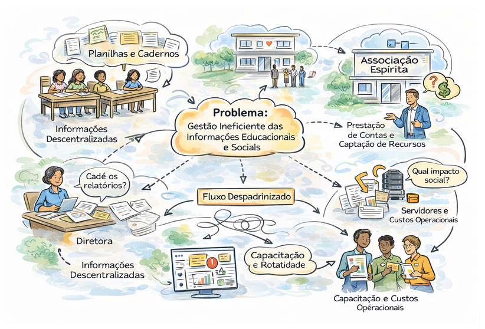
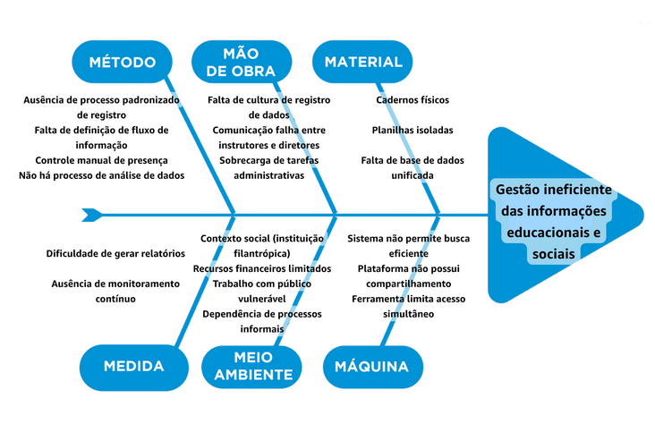
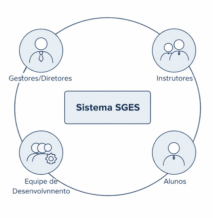

1. Cenário Atual e Negócio¶
1.1. Identificação e Contexto¶
Identificação dos Clientes/Parceiros¶
- Nome: Sociedade Espírita Auta de Souza;
- Tipo: Instituição Social-Educacional.
- Representante: Jussara Cordeiro Limeira (Vice-presidente da Associação).
- Forma de contato: Reuniões Periódicas por videoconferência e canal de mensagens instantâneas.
- Vínculo com o projeto: Cliente real e umas das partes interessadas principais, pois representa o stakeholder (Presidência da instituição) e usuário final do sistema (Gestor do projeto sócio-educacional). Será um dos responsáveis por elicitar, validar requisitos e decisões do projeto, além de avaliar as entregas realizadas ao longo do desenvolvimento.
Introdução ao Negócio e Contexto¶
A instituição cliente é uma organização de caráter social que atua no apoio a famílias em situação de vulnerabilidade, oferecendo cursos, oficinas e ações voltadas principalmente à promoção da saúde mental, bem-estar e assistência básica. Inserida no terceiro setor, sua atuação não possui fins lucrativos, sendo fortemente baseada no trabalho voluntário e no engajamento da comunidade. Ao longo de suas atividades, a instituição tem conseguido atender dezenas de famílias, promovendo não apenas suporte material, como doações, mas também desenvolvimento pessoal e social por meio de suas iniciativas.
O público-alvo da instituição é composto majoritariamente por pessoas em contextos de vulnerabilidade social, incluindo indivíduos que buscam apoio emocional, qualificação por meio de cursos e acompanhamento contínuo em atividades oferecidas. Além disso, a instituição também se relaciona com voluntários que atuam como instrutores e colaboradores, bem como com gestores responsáveis pela coordenação das ações e tomada de decisões estratégicas.
Apesar do impacto positivo gerado, a instituição ainda enfrenta desafios relacionados à organização e gestão das informações. Historicamente, o controle de dados tem sido realizado de forma manual e descentralizada, utilizando cadernos e planilhas individuais, o que dificulta o acompanhamento dos participantes, a análise de resultados e a geração de relatórios. Esse cenário limita a capacidade da instituição de monitorar o engajamento dos alunos, identificar evasões e demonstrar de forma estruturada o impacto social de suas ações.
Rich Picture¶

1.2. Oportunidade e Desafios¶
Identificação da Oportunidade ou Problema¶
Há um problema claro na forma como a instituição gerencia as informações relacionadas aos alunos e às atividades realizadas. Atualmente, não existe um sistema centralizado, o que faz com que os dados fiquem dispersos entre cadernos e planilhas individuais, dificultando o acompanhamento de frequência, evasão e histórico dos participantes, além de tornar a geração de relatórios um processo manual e sujeito a erros.
Além disso, a instituição ainda não utiliza uma abordagem orientada a dados, o que limita a análise estratégica e a identificação de indicadores relevantes. A descentralização dos processos, onde cada instrutor registra informações de forma independente, gera inconsistências, retrabalho e dificulta a consolidação dos dados.
Esse cenário é agravado pela dependência de trabalho voluntário e pela comunicação fragmentada entre instrutores e gestores, comprometendo a continuidade e a confiabilidade das informações. Como consequência, a instituição tem dificuldade em acompanhar seus alunos, fortalecer o relacionamento com eles e demonstrar de forma clara seu impacto social.
Dessa forma, evidencia-se a necessidade de uma solução que centralize, organize e torne acessíveis as informações, apoiando tanto a operação quanto a tomada de decisão.

Desafios do Projeto¶
A partir do problema de gestão ineficiente das informações educacionais e sociais, o projeto apresenta desafios técnicos, organizacionais, de conhecimento e financeiros.
Do ponto de vista técnico, é necessário desenvolver uma solução simples e acessível, compatível com a realidade da instituição, que atualmente utiliza ferramentas básicas. Também devem ser consideradas possíveis limitações de infraestrutura, como acesso à internet e dispositivos.
No aspecto de conhecimento, há o desafio de garantir que voluntários consigam utilizar o sistema, exigindo uma interface intuitiva e possível capacitação, evitando resistência à adoção.
Operacionalmente, a falta de padronização e a descentralização dos processos dificultam a implementação da solução, exigindo mudanças na forma de registro e organização das informações.
Além disso, a dependência de voluntários e sua rotatividade impactam a continuidade do uso do sistema, tornando o engajamento dos usuários um fator crítico.
Por fim, há o desafio financeiro, já que a instituição possui recursos limitados, sendo necessário considerar custos operacionais como servidores e manutenção, buscando uma solução viável e sustentável.
1.3. Stakeholders¶
Mapa de Stakeholders¶

Vice-presidente: Stakeholder central por ser a responsável pela mediação da plataforma. É o ponto de contato entre as decisões estratégicas, comunicação com desenvolvedores e a operação cotidiana, garantindo que a ferramenta atenda às necessidades de todos os perfis.
Diretores: São usuários finais da plataforma (acessam informações, gerenciam beneficiários) e, ao mesmo tempo, fornecem suporte nas decisões estratégicas sobre os programas. Contribuem com a vice-presidente para tratar de demandas da aplicação em caso de sua ausência.
Professores: Usuários do dia a dia da plataforma, responsáveis pelo registro de frequência, controle de faltas e gestão de matrículas dos beneficiários nas turmas. Reportam as informações operacionais, como frequência de alunos, que chegam até os diretores.
Time de desenvolvimento: Responsáveis por planejar, construir e entregar a solução. Seu trabalho precisa estar alinhado às necessidades identificadas junto aos demais stakeholders com a finalidade de mediar a solução para satisfazer todas as partes e resolver os problemas mapeado.
Abaixo é apresentado mais detalhes de quem serão os stakeholders que irão acompanhar, validar, elicitar e ajudar no processo de descoberta de novos requisitos durante o desenvolvimento do projeto.
A seguir, é apresentado um quadro resumo dos stakeholders.
| Stakeholders | Relação com a solução | Interesse principal | Influência |
|---|---|---|---|
| Vice-Presidente (Rep: Jussara Cordeiro Limeira) | Cliente real, usuário final e mediador. | Buscar oportunidades de gerir beneficiários da organização. | Alta |
| Diretores | Cliente real, usuário final e mediadores em caso de ausência da presidência | Suporte em tomadas de decisão, gerência de beneficiários da organização. | Média |
| Professores | Cliente real, usuário final da aplicação. | Controle dos beneficiários | Média |
| Desenvolvedores (Rep: Gabriel M, Gabriel, Vinicius, Medeiros, Guilherme) | Desenvolvedores da solução, junto aos stakeholders, são responsáveis por mapear a solução e desenvolvê-la atendendo as necessidades de todas as partes. | Mapear as necessidades e desenvolver a solução | Alta |
1.4. Segmentação de Clientes¶
A instituição atende a diferentes perfis de clientes, cada um com necessidades, expectativas e formas de interação distintas com as atividades oferecidas. Compreender essa segmentação é fundamental para o desenvolvimento de uma solução que realmente gere valor para todos os envolvidos.
O principal grupo é composto pelos alunos/participantes dos cursos e atividades. Esse público inclui pessoas em situação de vulnerabilidade social, famílias atendidas pela instituição e indivíduos que buscam apoio por meio de cursos, oficinas e ações voltadas à saúde mental e bem-estar. Esses usuários necessitam de um acompanhamento mais próximo, com registro de frequência, histórico de participação e continuidade no atendimento, além de um relacionamento mais humanizado.
Outro perfil relevante é o dos instrutores, que geralmente atuam de forma voluntária. Eles são responsáveis por ministrar cursos, acompanhar os alunos e realizar registros das atividades. Para esse grupo, a principal necessidade está relacionada à praticidade e agilidade no uso de ferramentas, já que não podem dedicar muito tempo a tarefas burocráticas. A solução deve, portanto, ser simples, intuitiva e eficiente, facilitando o registro de presença e a gestão das turmas.
Há também o perfil dos gestores/diretores da instituição, que possuem uma visão mais estratégica. Esse grupo precisa de acesso a informações consolidadas para tomada de decisão, como relatórios sobre participação, evasão e impacto social das ações. Além disso, esses dados são essenciais para a prestação de contas, captação de recursos e fortalecimento institucional.
Outro segmento importante é formado por parceiros e apoiadores, como doadores, organizações parceiras e possíveis investidores sociais. Embora não utilizem diretamente o sistema no dia a dia, esse público depende das informações geradas pela instituição para avaliar o impacto das ações desenvolvidas. Assim, a disponibilidade de dados organizados e confiáveis contribui para aumentar a credibilidade e a transparência da instituição.
Por fim, pode-se considerar também a comunidade em geral, que é impactada indiretamente pelas atividades realizadas. Esse grupo inclui familiares dos participantes e a sociedade ao redor, que se beneficiam das ações sociais promovidas. Embora não sejam usuários diretos da solução, eles fazem parte do ecossistema e reforçam a importância de uma gestão eficiente das informações.
Dessa forma, a solução proposta deve atender a múltiplos perfis, equilibrando simplicidade operacional para usuários do dia a dia, como instrutores, com capacidade analítica e estratégica para gestores, além de gerar dados confiáveis que fortaleçam a relação com parceiros e a comunidade.